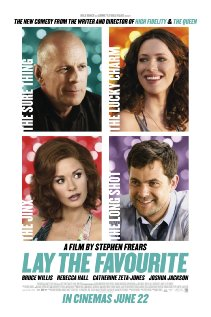

Lay The Favorite (2012)
Première: donderdag 15 november 2012
Regie: Stephen Frears
Cast: Bruce Willis | Rebecca Hall | Catherine Zeta-Jones | Vince Vaughn | Joshua Jackson | Laura Prepon | Joel Murray | Frank Grillo | Corbin Bernsen | John Carroll Lynch | Dominique DuVernay | Andrea Frankle |
Michelle Torres | Lara Grice | Ritchie Montgomery
Genre: Drama, Komedie
Lengte: 94 minuten
Het verhaal speelt zich af in het legale - en illegale - gokcircuit en volgt de onvoorspelbare dromer Beth die opklimt van stripper in Tallahassee tot de assistent van Dink, een van de meest succesvolle gokkers in Las Vegas.
Ze is een natuurtalent maar maakt de fout om voor Dink te vallen, wat zeer tegen de zin is van diens vrouw Tulip, een ex-showgirl. Het is het begin van een oorlog tussen de drie. Tegen het advies van Dink gaat Beth werken voor de flamboyante maar onstabiele Rosie die allerlei illegale zaakjes runt in New York City.
Wanneer de zaken echter verkeerd lopen en hierdoor Beths onschuldige vriendje een gevangenisstraf boven het hoofd hangt, moet ze zich opnieuw verenigen met Dink, het opnemen tegen de vreselijke Tulip, de gevangenis trotseren en terug naar NYC keren om haar verantwoordelijkheid op te nemen.
Keren haar kansen en kan ze haar slag thuishalen?
Ze is een natuurtalent maar maakt de fout om voor Dink te vallen, wat zeer tegen de zin is van diens vrouw Tulip, een ex-showgirl. Het is het begin van een oorlog tussen de drie. Tegen het advies van Dink gaat Beth werken voor de flamboyante maar onstabiele Rosie die allerlei illegale zaakjes runt in New York City.
Wanneer de zaken echter verkeerd lopen en hierdoor Beths onschuldige vriendje een gevangenisstraf boven het hoofd hangt, moet ze zich opnieuw verenigen met Dink, het opnemen tegen de vreselijke Tulip, de gevangenis trotseren en terug naar NYC keren om haar verantwoordelijkheid op te nemen.
Keren haar kansen en kan ze haar slag thuishalen?
Officiële trailer van Lay The Favorite